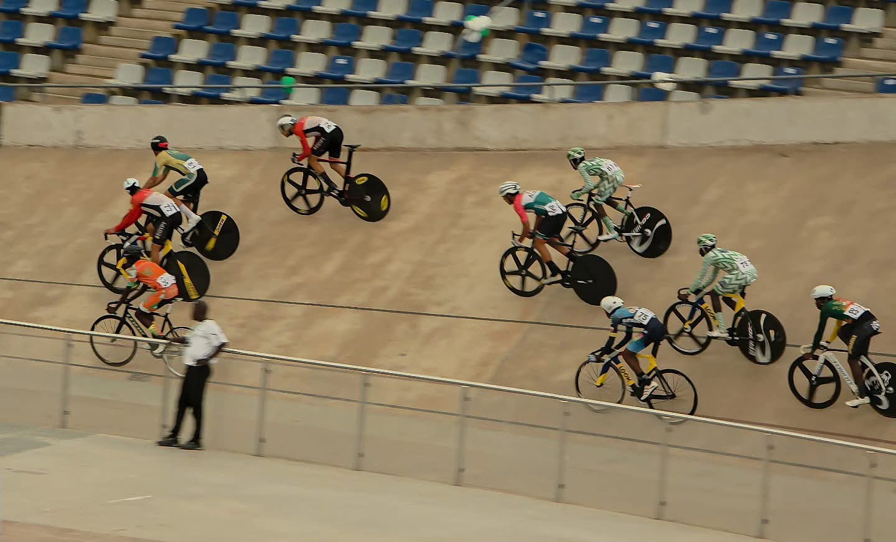
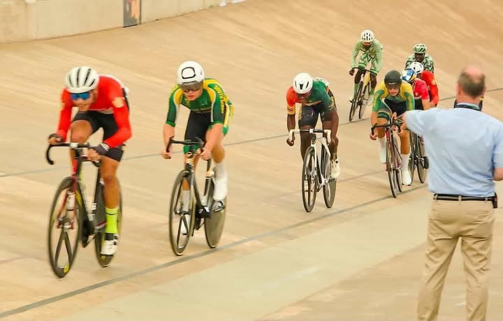
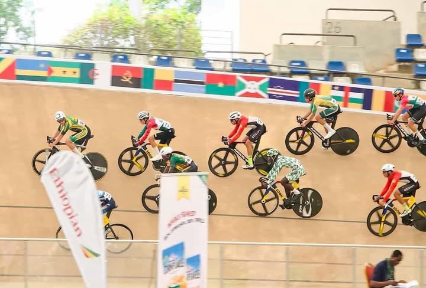

Track African Championship
OUR RIDERS
RACE FOR EGYPT.
6 October riders are competing with the Egyptian National Team at the Track African Championship—representing Egypt with speed, focus, and ambition.
Meet the team →
